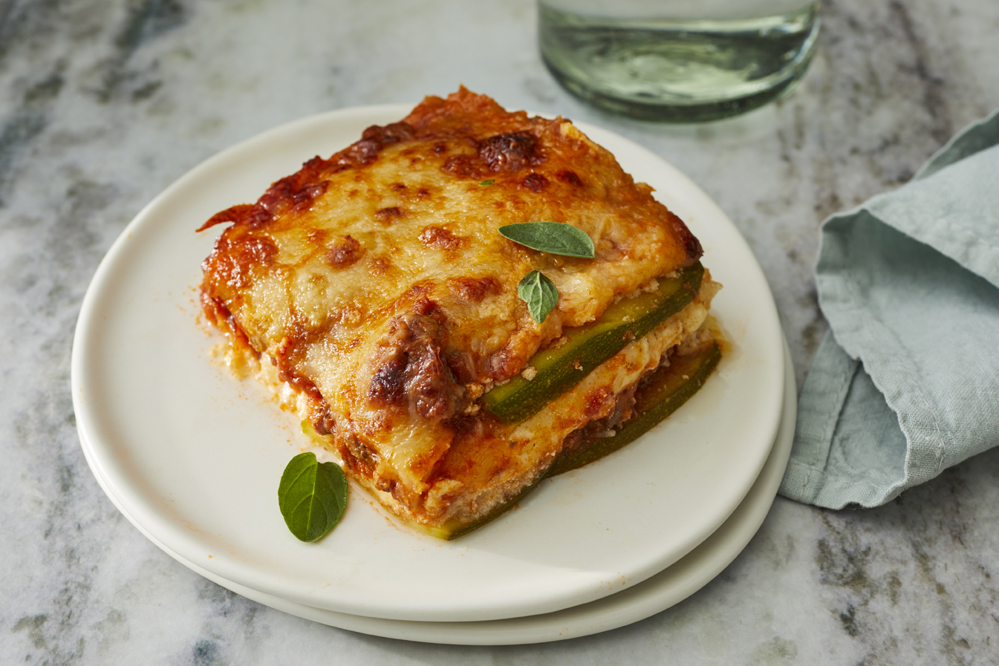

Lasagna

Description
Zucchini slices step in for pasta in this low-carb and gluten-free beef lasagna that is delicious and satisfying; such a crowd pleaser!
Ingredients
- cooking spray
- 1.5 large zucchinis, thinly sliced lengthwise
- 1 tablespoon olive oil
- 1 pound ground beef
- etc
Steps
- Preheat oven to 375 degrees.
- Pat dry zucchini slices with a paper towel to get rid of excess moisture.
- Heat olive oil in a saucepan over medium-high heat. Add ground beef; cook until browned, 5 to 8 minutes.
- etc